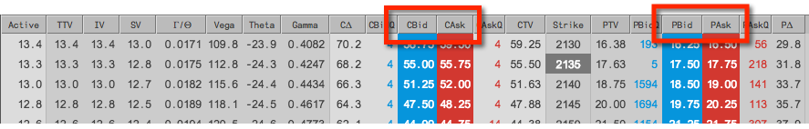
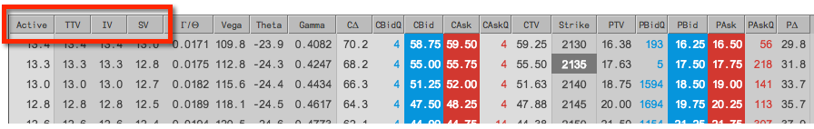
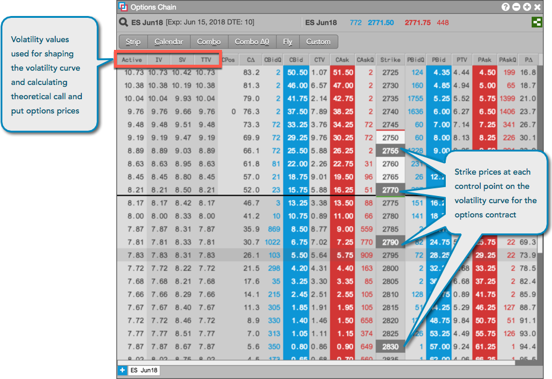
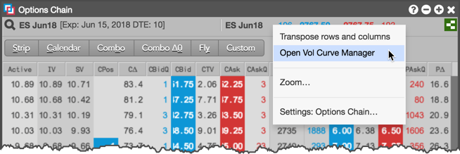
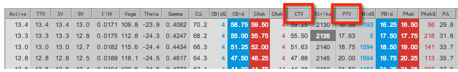
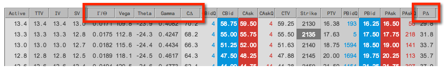

The Options Chain displays the following market data: Call and Put options prices, volatility, theoretical prices, and options Greeks. The market data is displayed in columns that can you can show/hide in the Options Chain. For a description of each column, refer to Reference.
Direct market prices for call and put options contracts are displayed in columns to the left (Calls) and right (Puts) of the Strike column.

The Options Chain displays the following volatility values: Active (either user or fit vol), TTV (TT-calculated fit vol), IV (implied vol), SV (settlement vol). The Active column shows which volatility value is currently being used for calculating theoretical call and put values.

TT calculates and stores volatility curve values that are used for shaping the volatility curve and determining the price of each option. These calculated values are displayed in the TTV column in the Options Chain and are used to fit the volatility curve to implied control points, which are used to normalize the shape of the curve.
If you modify the TT fit vol values in the Vol Curve Manager widget, the Options Chain will recalculate the volatility and display it in the Active column. The Vol Curve Manager will also fit the curve to the control points based on the user volatility values.
The shaded strike prices in the Options Chain indicate control points on the volatility curve for the options month:

Tip: If you're an Advanced Options Package user, right-click in the top panel of the Options Chain to open the Vol Curve Manager seeded with the current expiry for the selected product.

Theoretical call and put prices are calculated using the Barone-Adesi and Whaley Model for pricing options on futures. The user defined volatility or TT-calculated fit volatility displayed in the Active column in the Options Chain is used as a variable in calculating the theoretical options values.

The Options Chain columns include the following Greeks: delta (Call and Put), gamma, theta, rho, vega, and gamma/theta.
